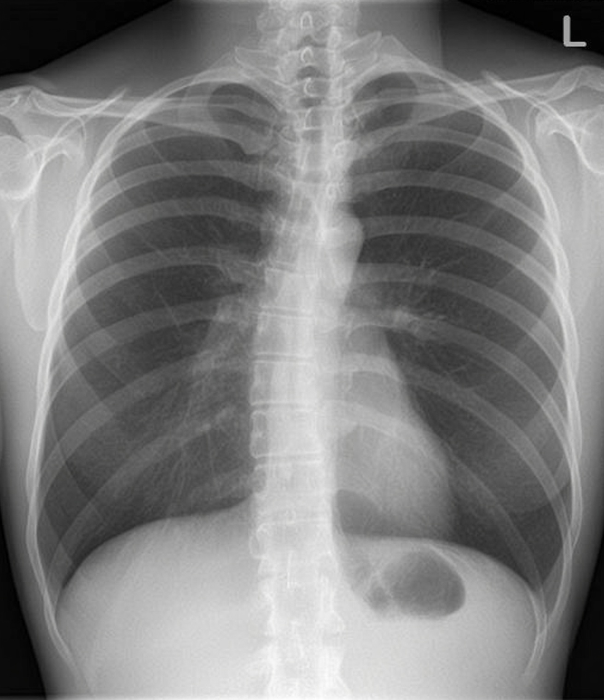
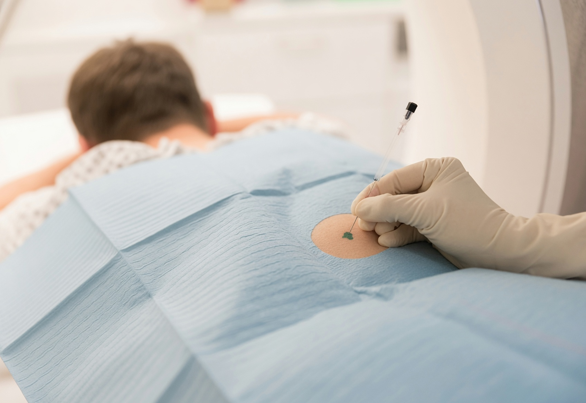

Muskuloskelettale Radiologie
Musculoskeletal Radiology
Präzise Bildgebung des Bewegungsapparats — von Gelenken und Knorpel über Sehnen und Bänder bis zu Wirbelsäule und Knochen. Sportmedizin, Arthrographie und Frakturdiagnostik in höchster Auflösung.
Precise imaging of the musculoskeletal system — from joints and cartilage to tendons and ligaments, spine and bone. Sports medicine, arthrography and fracture assessment at the highest resolution.
Neuroradiologie
Modernste MRT- und CT-Diagnostik für Gehirn, Rückenmark und peripheres Nervensystem. Schlaganfall, Tumore, Multiple Sklerose und Demenz-Abklärung mit höchster Präzision.
State-of-the-art MRI and CT diagnostics for the brain, spinal cord and peripheral nervous system. Stroke, tumours, multiple sclerosis and dementia work-up with the highest precision.

Abdominelle Radiologie
Abdominal Radiology
Umfassende Bildgebung der Bauchorgane — Leber, Gallenblase, Pankreas, Nieren und onkologisches Staging. MRCP für schonende Gallengangsdiagnostik und Prostata-MRT für präzise Karzinom-Abklärung.
Comprehensive imaging of abdominal organs — liver, gallbladder, pancreas, kidneys and oncological staging. MRCP for non-invasive bile duct assessment and prostate MRI for precise carcinoma work-up.

Thorakale Radiologie
Thoracic Radiology
Hochauflösende Bildgebung von Lunge, Mediastinum und Thoraxgefässen. HRCT für Lungenparenchym, CT-Angiographie für Embolie-Abklärung und Lungen-Screening mit niedriger Dosis.
High-resolution imaging of the lungs, mediastinum and thoracic vessels. HRCT for lung parenchyma, CT angiography for embolism work-up and low-dose lung screening.

Gefässdiagnostik
Vascular Imaging
Nicht-invasive Darstellung des gesamten Gefässsystems — Karotiden, Aorta, periphere Arterien und Venen. MR-Angiographie ohne Strahlenbelastung, CT-Angiographie für höchste zeitliche Auflösung.
Non-invasive imaging of the entire vascular system — carotids, aorta, peripheral arteries and veins. MR angiography without radiation, CT angiography for the highest temporal resolution.

Schmerztherapie
Bildgestützte, minimal-invasive Infiltrationen direkt am Schmerzursprung — Wirbelsäule, Facettengelenke, ISG und Nervenwurzeln. Ambulant, präzise, wirksam.
Image-guided, minimally invasive infiltrations directly at the source of pain — spine, facet joints, SIJ and nerve roots. Outpatient, precise, effective.

Mamma-MRT
Hochauflösende MRT-Untersuchung der Brust ohne ionisierende Strahlung. Ideal für Hochrisiko-Screening (BRCA), Implantat-Kontrolle und die Abklärung unklarer Befunde aus Voruntersuchungen. Ergänzend bieten wir den Brust-Ultraschall an.
High-resolution MRI of the breast without ionising radiation. Ideal for high-risk screening (BRCA), implant assessment and clarification of unclear findings from previous examinations. We also offer breast ultrasound as a complement.